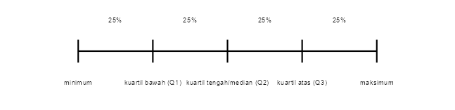

Bab 3 Analisis Statistik Deskriptif
Capaian Pembelajaran
Setelah mempelajari bab ini, Anda diharapkan:
- mampu memilih statistik deskriptif yang tepat sesuai dengan variabel yang akan disajikan dan informasi yang ingin disampaikan STP-2.2
- mampu menginterpretasikan informasi dari persentase/proporsi, rasio, laju, ukuran pemusatan, dan ukuran penyebaran suatu data kuantiatif sesuai dengan konteks kasusnya STP-2.3
3.1 Makna Analisis Statistik Deskriptif
Statistik deskriptif adalah metode analisis untuk mendeskripsikan data dari sampel atau populasi. Metode ini digunakan untuk membantu kita menghasilkan informasi yang bermakna dan bernilai dari sekadar data mentah. Perlu dicatat bahwa analisis statistik deskriptif dapat digunakan pada data mentah entah berupa sampel atau populasi. Dengan demikian, statistik deskriptif sangat bergantung pada kondisi data mentah yang kita miliki.
Berdasarkan teknik yang digunakan, statistik deskriptif dapat dibagi menjadi 4 kategori: ukuran frekuensi, ukuran kecenderungan memusat, ukuran penyebaran, dan tabel silang. Setiap kategori teknik memiliki tingkat pengukuran yang sesuai untuk variabel yang akan dianalisi. Makna yang dihasilkan juga akan berbeda tergantung pada teknik yang digunakan.
⚠️ Penting
Di sinilah letak krusialnya menentukan tingkat pengukuran variabel, karena akan menentukan teknik analisis statistik deskriptif apa yang akan digunakan. Sebagai contoh, kita tidak bisa menggunakan mean untuk mengukur variabel nominal.
3.2 Ukuran Frekuensi
Ukuran frekuensi adalah cara paling sederhana untuk memaknai satu variabel. Ukuran ini menyatakan frekuensi relatif objek-objek dilihat dari suatu variabel kategorik. Objek-objek dikelompokkan ke dalam kategori-kategori dan dihitung jumlahnya dan dibandingkan dengan jumlah keseluruhan objek tersebut. Untuk dapat menggunakan teknik ini, kita perlu melakukan pengolahan pada data mentah berupa variabel kategorik, yakni mengelompokkan objek berdasarkan kategori-kategori yang ada pada variabel tersebut dan menghitung frekuensi dari setiap kategori tersebut.
Secara matematis, ukuran frekuensi dapat dinyatakan sebagai berikut:
\[ \begin{equation} \text{FR} = \frac{f}{n} \tag{3.1} \end{equation} \]
dengan:
- \(FR\) = Frekuensi Relatif
- \(f\) = Frekuensi suatu kategori
- \(n\) = Jumlah Observasi
Makna yang dihasilkan dari teknik ini adalah seberapa besar perbandingan jumlah objek pada suatu kategori relatif terhadap jumlah keseluruhan objeknya. Dari besar perbandingan tersebut, kita dapat mengetahui dominasi kategori tertentu pada objek-objek yang diamati serta perbandingan yang adil antar kumpulan objek dengan kategorisasi yang sama.
Karena rumus perhitungan frekuensi relatif melibatkan penghitungan frekuensi atau jumlah objek (Persamaan (3.1)), maka teknik ini hanya dapat digunakan pada data nominal dan ordinal. Teknik ini tidak dapat digunakan pada data interval dan rasio karena data interval dan rasio tidak memiliki kategori.
Studi Kasus: Penerapan Ukuran Frekuensi dari Dataset Hasil Survei
Sekarang kita akan membahas teknik analisis statistik dalam set data (dataset) mengenai pola pergerakan mahasiswa di ITERA. Untuk kepentingan kelengkapan ulasan, variabelnya kita tambah dengan satu variabel ordinal: tingkat tahun kuliah (tingkat).
Berikut adalah contoh set data hasil kuesioner yang sudah disebarkan beserta metadatanya:
| ID | kend | tingkat | jarak | perjalanan_senin | biaya_pekan |
|---|---|---|---|---|---|
| 117 | 5 | 4 | 2,34 | 3 | 0 |
| 118 | 1 | 4 | 2,66 | 2 | 40 |
| 119 | 1 | 4 | 3,84 | 2 | 30 |
| 120 | 1 | 4 | 3,64 | 3 | 40 |
| 121 | 1 | 3 | 3,17 | 2 | 45 |
| 138 | 3 | 4 | 3,84 | 3 | 15 |
| 139 | 3 | 3 | 3,84 | 4 | 60 |
| 161 | 5 | 2 | 3,52 | 4 | 0 |
Metadata:
| Variabel | Keterangan |
|---|---|
| ID | Nomor urut responden |
| kend |
Jenis kendaraan yang digunakan 1 = sepeda motor pribadi 2 = mobil pribadi 3 = layanan online 4 = menumpang kawan 5 = sepeda 6 = berjalan kaki |
| tingkat |
Tingkat semester kuliah 1 = Tahun pertama 2 = Tahun kedua 3 = Tahun ketiga 4 = Tahun keempat 5 = Swasta (mahasiswa tingkat akhir) |
| jarak | Jarak tempat tinggal mahasiswa dari kampus (kilometer) |
| perjalanan_senin | Frekuensi perjalanan di hari Senin |
| biaya_pekan | Biaya perjalanan selama sepekan (ribu rupiah) |
Ukuran frekuensi dapat dilakukan pada variabel kategorik (tingkat pengukuran nominal atau ordinal), seperti kend dan tingkat. Untuk dapat menghitung analisis ini kita harus membuat terlebih dahulu tabel frekuensi untuk kedua variabel ini. Kemudian, barulah kita dapat menghitung frekuensi relatifnya menggunakan Persamaan (3.1)
| kend | Jenis kendaraan | Frekuensi | Frekuensi Relatif |
|---|---|---|---|
| 1 | Sepeda motor pribadi | 4 | 0,50 |
| 2 | Mobil pribadi | 0 | 0,00 |
| 3 | Layanan online | 2 | 0,25 |
| 4 | Menumpang kawan | 0 | 0,00 |
| 5 | Sepeda | 2 | 0,25 |
| 6 | Berjalan kaki | 0 | 0,00 |
| Total | 8 | 1,00 |
| tingkat | Tingkat kuliah | Frekuensi | Frekuensi Relatif |
|---|---|---|---|
| 1 | Tahun pertama | 0 | 0,000 |
| 2 | Tahun kedua | 1 | 0,125 |
| 3 | Tahun ketiga | 2 | 0,250 |
| 4 | Tahun keempat | 5 | 0,625 |
| 5 | Swasta (tingkat akhir) | 0 | 0,000 |
| Total | 8 | 1,000 |
Teknik-teknik analisis statistik deskriptif yang termasuk ke dalam kelompok ukuran frekuensi di antaranya adalah persentase/proporsi, laju, rasio, dan perubahan persentase. Silakan pelajari cara penggunaan masing-masing teknik disertai kasus penerapannya.
3.2.1 Persentase dan Proporsi
Dua jenis ukuran frekuensi yang paling sering dipakai adalah persentase dan proporsi (Ewing and Park 2020). Kedua teknik ini menghasilkan nilai yang sama, hanya saja dinyatakan dalam skala yang berbeda. Persentase dinyatakan dalam skala 0-100 dengan satuan persen (%), sedangkan proporsi dinyatakan dalam skala 0-1. Dengan demikian, dapat dikatakan bahwa sebenarnya Persamaan (3.1) adalah proporsi dan persentase adalah proporsi yang dikalikan dengan 100.
\[ \begin{equation} \text{Persentase} = \frac{f}{n} \times 100\% \tag{3.2} \end{equation} \]
Makna yang bisa kita dapatkan dari analisis ini adalah dominansi suatu kategori terhadap kategori lainnya. Selain itu, ketika membandingkan dua kelompok yang jumlah totalnya berbeda, kita bisa membandingkan satu kategori yang sama pada kelompok tersebut secara adil.
Catatan
Selain persen (per 100), ada juga satuan ‘permil’ (per 1000) dengan simbol ‰, yang biasa digunakan pada perhitungan-perhitungan yang melibatkan bilangan yang sangat kecil.
Studi Kasus: Penerapan Persentase dan Proporsi
Salah satu keunggulan persentase adalah kemampuannya untuk membandingkan dominansi suatu kategori pada dua kelompok yang memiliki jumlah total berbeda secara adil. Mari kita bandingkan penggunaan sepeda motor pribadi sebagai kendaraan utama di dua perguruan tinggi: ITERA dan UBL.
Berdasarkan survei pola mobilitas mahasiswa, diperoleh data sebagai berikut:
| Kampus | Total Responden | Pengguna Sepeda Motor Pribadi |
|---|---|---|
| ITERA | 429 | 276 |
| UBL | 380 | 195 |
Perbandingan Menggunakan Frekuensi Absolut:
Jika kita hanya membandingkan jumlah absolut, ITERA memiliki 276 pengguna sepeda motor sedangkan UBL memiliki 195 pengguna. Apakah ini berarti penggunaan sepeda motor lebih dominan di ITERA? Belum tentu, karena total responden di kedua kampus berbeda.
Perbandingan Menggunakan Persentase:
Mari kita hitung persentase pengguna sepeda motor di masing-masing kampus menggunakan Persamaan (3.2):
ITERA:
\[ \text{Persentase sepeda motor ITERA} = \frac{276}{429} \times 100\% = 64,3\% \]
UBL: \[ \text{Persentase sepeda motor UBL} = \frac{195}{380} \times 100\% = 51,3\% \]
| Kampus | Total Responden | Pengguna Motor | Proporsi | Persentase |
|---|---|---|---|---|
| ITERA | 429 | 276 | 0,643 | 64,3% |
| UBL | 380 | 195 | 0,513 | 51,3% |
Interpretasi:
Dengan menggunakan persentase, kita dapat membandingkan kedua kampus secara adil meskipun jumlah respondennya berbeda:
- Dominansi di ITERA: Sebanyak 64,3% mahasiswa ITERA menggunakan sepeda motor pribadi sebagai kendaraan utama
- Dominansi di UBL: Sebanyak 51,3% mahasiswa UBL menggunakan sepeda motor pribadi sebagai kendaraan utama
- Kesimpulan: Penggunaan sepeda motor lebih dominan di ITERA dibandingkan UBL, dengan selisih 13 poin persentase
Tanpa persentase, kita akan salah menyimpulkan hanya berdasarkan jumlah absolut (276 vs 195). Persentase memberikan ukuran yang adil untuk membandingkan dominansi kategori pada kelompok dengan ukuran berbeda.
Implikasi untuk Perencanaan:
Informasi ini penting bagi perencana transportasi kampus untuk: - ITERA perlu menyediakan area parkir motor yang lebih luas (minimal 64% dari kapasitas mahasiswa) - UBL dapat mengalokasikan lebih banyak ruang untuk moda transportasi alternatif karena dominansi motor lebih rendah
3.2.2 Laju (Rate)
Hampir sama dengan persentase, laju juga merupakan ukuran frekuensi relatif. Perbedaan dengan persentase terletak pada ide dari pembagi (denominator) yang digunakan. Persentase digunakan pada kondisi jumlah keseluruhan objek tidak berubah atau statis. Sementara laju digunakan pada kondisi jumlah keseluruhan objek berubah atau dinamis.
\[ \begin{equation} \text{Laju} = \frac{f}{n_i} \times 100\% \tag{3.3} \end{equation} \]
Pada Persamaan (3.3), subscript \(i\) ditambahkan untuk menandakan bahwa jumlah keseluruhan yang menjadi denominator adalah jumlah yang bersifat dinamis.
Makna yang kita dapatkan dari hasil analisis ini sama persis seperti persentase dan proporsi, yakni perbandingan adil suatu kategori dari sejumlah kelompok yang berbeda. Perbedaannya hanya terletak pada ide dari jumlah pembagi yang bisa berubah-ubah sepanjang waktu.
Studi Kasus: Perhitungan Laju
Konsep laju sangat penting dalam analisis transportasi, terutama untuk memahami dinamika perubahan pola pergerakan dari waktu ke waktu. Berbeda dengan persentase yang mengukur bagian dari total yang statis, laju mengukur tingkat perubahan relatif terhadap populasi yang berubah.
Misalkan kita memiliki data survei pola mobilitas mahasiswa dari tiga perguruan tinggi di Lampung (UBL, ITERA, dan UNILA) yang dilakukan pada dua periode berbeda: 2023 dan 2024. Kita tertarik untuk mengetahui laju pertumbuhan penggunaan sepeda motor pribadi sebagai moda transportasi utama.
Data Tahun 2023:
| Kampus | Jumlah Mahasiswa | Pengguna Sepeda Motor |
|---|---|---|
| UBL | 8500 | 5100 |
| ITERA | 5200 | 3380 |
| UNILA | 12000 | 7800 |
Data Tahun 2024:
| Kampus | Jumlah Mahasiswa | Pengguna Sepeda Motor |
|---|---|---|
| UBL | 9200 | 6072 |
| ITERA | 5800 | 4350 |
| UNILA | 13500 | 9450 |
Dengan menggunakan Persamaan (3.3), kita dapat menghitung laju penggunaan sepeda motor untuk masing-masing kampus:
Perhitungan untuk UBL:
\[ \text{Laju 2023} = \frac{5.100}{8.500} \times 100\% = 60,0\% \]
\[ \text{Laju 2024} = \frac{6.072}{9.200} \times 100\% = 66,0\% \]
Perhitungan untuk ITERA:
\[ \text{Laju 2023} = \frac{3.380}{5.200} \times 100\% = 65,0\% \]
\[ \text{Laju 2024} = \frac{4.350}{5.800} \times 100\% = 75,0\% \]
Perhitungan untuk UNILA:
\[ \text{Laju 2023} = \frac{7.800}{12.000} \times 100\% = 65,0\% \]
\[ \text{Laju 2024} = \frac{9.450}{13.500} \times 100\% = 70,0\% \]
Interpretasi:
Hasil perhitungan menunjukkan bahwa laju penggunaan sepeda motor meningkat di semua kampus. ITERA mengalami peningkatan laju tertinggi (10 poin persentase, dari 65% menjadi 75%), diikuti oleh UBL (6 poin persentase) dan UNILA (5 poin persentase).
Perhatikan bahwa meskipun jumlah mahasiswa di setiap kampus bertambah dari tahun 2023 ke 2024, kita tetap dapat membandingkan laju penggunaan sepeda motor karena denominatornya disesuaikan dengan jumlah mahasiswa pada setiap periode. Ini berbeda dengan persentase biasa yang menggunakan denominator tetap.
Informasi laju ini sangat berguna bagi perencana transportasi untuk memahami tren penggunaan moda transportasi dan merencanakan infrastruktur yang sesuai, seperti area parkir kendaraan bermotor di kampus.
3.2.3 Rasio
Jika frekuensi relatif di awal membandingkan frekuensi objek pada suatu kategori dengan jumlah objek keseluruhan, rasio membandingkan frekuensi objek pada suatu kategori terhadap kategori lain.
\[ \begin{equation} \text{Rasio} = \frac{n_i}{n_j} \tag{3.4} \end{equation} \]
dengan:
- \(n_i\) = Jumlah objek pada kategori i
- \(n_j\) = Jumlah objek pada kategori j
Makna yang bisa kita hasilkan dari perhitungan ini adalah ketimpangan dari dua kategori yang dibandingkan. Biasanya dinyatakan dalam bentuk perbandingan “1:n” yang berarti “setiap 1 objek kategori x terdapat n objek kategori y”.
Studi Kasus: Perhitungan Rasio Penggunaan Kendaraan
Rasio sangat berguna untuk membandingkan dua kategori yang berbeda dalam suatu variabel. Dalam studi transportasi, kita sering ingin membandingkan penggunaan berbagai jenis moda transportasi untuk memahami preferensi dan pola mobilitas.
Mari kita gunakan data mahasiswa ITERA untuk menghitung rasio penggunaan kendaraan bermotor terhadap kendaraan non-bermotor. Berdasarkan data survei pola mobilitas mahasiswa ITERA, kita dapat mengelompokkan jenis kendaraan menjadi dua kategori besar:
Kendaraan Bermotor: - Sepeda Motor Pribadi - Mobil Pribadi
- Transportasi Online - Kendaraan Bermotor (menumpang dengan keluarga/teman)
Kendaraan Non-Bermotor: - Sepeda - Berjalan Kaki
Dari dataset yang berisi 429 responden mahasiswa ITERA, diperoleh distribusi sebagai berikut:
| Kategori Kendaraan | Jumlah Mahasiswa | Persentase |
|---|---|---|
| Kendaraan Bermotor | 398 | 92,8% |
| Kendaraan Non-Bermotor | 31 | 7,2% |
| Total | 429 | 100% |
Detail per jenis kendaraan:
| Jenis Kendaraan | Kategori | Jumlah |
|---|---|---|
| Sepeda Motor Pribadi | Bermotor | 276 |
| Mobil Pribadi | Bermotor | 47 |
| Transportasi Online | Bermotor | 32 |
| Menumpang (Kendaraan Bermotor) | Bermotor | 43 |
| Sepeda | Non-Bermotor | 18 |
| Berjalan Kaki | Non-Bermotor | 13 |
Menggunakan Persamaan (3.4), kita dapat menghitung rasio penggunaan kendaraan bermotor terhadap kendaraan non-bermotor:
\[ \text{Rasio} = \frac{n_{\text{bermotor}}}{n_{\text{non-bermotor}}} = \frac{398}{31} = 12,84 \]
Interpretasi:
Rasio 12,84 berarti bahwa untuk setiap 1 mahasiswa yang menggunakan kendaraan non-bermotor (sepeda atau berjalan kaki), terdapat sekitar 13 mahasiswa yang menggunakan kendaraan bermotor. Nilai rasio ini dapat juga dinyatakan sebagai 12,84:1 atau dibulatkan menjadi 13:1.
Rasio yang tinggi ini menunjukkan dominasi penggunaan kendaraan bermotor di kalangan mahasiswa ITERA. Informasi ini penting bagi perencana kampus untuk:
- Merencanakan kapasitas area parkir kendaraan bermotor yang memadai
- Mempertimbangkan program promosi penggunaan kendaraan non-bermotor demi keberlanjutan
- Merancang infrastruktur jalur sepeda dan pejalan kaki yang aman
Kita juga dapat menghitung rasio antar jenis kendaraan bermotor. Misalnya, rasio penggunaan sepeda motor pribadi terhadap mobil pribadi:
\[ \text{Rasio motor:mobil} = \frac{276}{47} = 5,87 \approx 6:1 \]
Artinya, untuk setiap 1 mahasiswa yang menggunakan mobil pribadi, terdapat sekitar 6 mahasiswa yang menggunakan sepeda motor pribadi.
3.2.4 Perubahan Persentase (Percentage Change)
Mengukur perubahan sosial dalam berbagai bentuknya merupakan tugas penting dalam ilmu-ilmu sosial (Healey 2021). Salah satu statistik yang sangat berguna untuk tujuan ini adalah perubahan persentase (percentage change), yang menunjukkan seberapa besar suatu variabel telah meningkat atau menurun selama periode waktu tertentu.
Untuk menghitung perubahan persentase, kita memerlukan nilai suatu variabel pada dua titik waktu yang berbeda. Nilai-nilai tersebut dapat berupa frekuensi, laju, atau persentase itu sendiri. Perubahan persentase akan memberitahu kita seberapa besar perubahan yang terjadi pada waktu kemudian relatif terhadap waktu sebelumnya.
Rumus perubahan persentase adalah:
\[ \begin{equation} \text{Perubahan Persentase} = \left(\frac{f_2 - f_1}{f_1}\right) \times 100\% \tag{3.5} \end{equation} \]
dengan:
- \(f_1\) = Nilai pertama (waktu awal), frekuensi, atau nilai
- \(f_2\) = Nilai kedua (waktu kemudian), frekuensi, atau nilai
Makna yang dihasilkan dari analisis ini adalah magnitud (besar nilai) dan arah perubahan yang terjadi. Tanda positif menunjukkan peningkatan, sedangkan tanda negatif menunjukkan penurunan.
Studi Kasus: Perubahan Persentase Penggunaan Transportasi Online
Mari kita analisis perubahan pola mobilitas mahasiswa ITERA dari waktu ke waktu. Berdasarkan data survei yang dilakukan pada dua periode berbeda, kita tertarik untuk mengetahui perubahan persentase penggunaan transportasi online sebagai moda transportasi utama.
Data Survei Periode 1 (Semester Ganjil 2023): - Total responden: 200 mahasiswa - Pengguna transportasi online: 24 mahasiswa
Data Survei Periode 2 (Semester Ganjil 2024): - Total responden: 429 mahasiswa
- Pengguna transportasi online: 32 mahasiswa
Pertama, kita hitung persentase penggunaan transportasi online pada masing-masing periode:
Periode 1:
\[ \text{Persentase TO Periode 1} = \frac{24}{200} \times 100\% = 12,0\% \]
Periode 2:
\[ \text{Persentase TO Periode 2} = \frac{32}{429} \times 100\% = 7,5\% \]
| Periode | Total Responden | Pengguna Transportasi Online | Persentase |
|---|---|---|---|
| Semester Ganjil 2023 | 200 | 24 | 12,0% |
| Semester Ganjil 2024 | 429 | 32 | 7,5% |
Sekarang kita hitung perubahan persentase menggunakan Persamaan (3.5):
\[ \text{Perubahan Persentase} = \left(\frac{7,5 - 12,0}{12,0}\right) \times 100\% = \left(\frac{-4,5}{12,0}\right) \times 100\% = -37,5\% \]
Interpretasi:
Terjadi penurunan sebesar 37,5% dalam penggunaan transportasi online sebagai moda transportasi utama mahasiswa ITERA dari Semester Ganjil 2023 ke Semester Ganjil 2024.
Perhatikan bahwa meskipun jumlah absolut pengguna transportasi online meningkat dari 24 menjadi 32 orang, magnitudnya justru menurun dari 12,0% menjadi 7,5%. Ini terjadi karena:
- Total responden meningkat signifikan (dari 200 ke 429 mahasiswa)
- Pertumbuhan jumlah pengguna transportasi online (8 orang) tidak sebanding dengan pertumbuhan total populasi (229 orang)
Implikasi untuk Perencanaan:
Penurunan 37,5% ini mengindikasikan bahwa: - Mahasiswa lebih memilih moda transportasi lain seperti sepeda motor pribadi - Kebijakan kampus tentang akses transportasi online mungkin perlu dievaluasi - Perlu investigasi lebih lanjut tentang faktor-faktor yang menyebabkan penurunan ini (biaya, ketersediaan, kenyamanan, dll.)
Simak juga pembahasan kasus terkait perubahan persentase yang sempat hangat di pertengahan tahun 2025, yakni kenaikan tarif pajak pertambahan nilai (PPN) dari 11% hingga 12%.
Studi Kasus: Kesalahan Umum dalam Menafsirkan Kenaikan Pajak
Perhatikan pernyataan berikut yang sering kita dengar di media massa atau percakapan sehari-hari:
“Pemerintah menaikkan tarif pajak penghasilan (PPh) dari 11% menjadi 12%. Kenaikannya hanya 1% saja, tidak terlalu signifikan.”
Benarkah kenaikannya “hanya 1%”? Mari kita analisis dengan cermat menggunakan konsep perubahan persentase.
Data: - Tarif pajak awal (\(f_1\)) = 11% - Tarif pajak baru (\(f_2\)) = 12% - Selisih absolut = 12% - 11% = 1 poin persentase
Analisis yang Keliru:
Banyak orang menyimpulkan bahwa kenaikannya “hanya 1%” karena melihat selisih absolut. Namun, ini adalah kesalahan interpretasi yang fatal.
Analisis yang Benar:
Kita harusnya menghitung perubahan persentase menggunakan Persamaan (3.5):
\[ \text{Perubahan Persentase} = \left(\frac{12 - 11}{11}\right) \times 100\% = \left(\frac{1}{11}\right) \times 100\% = 9,09\% \]
Sebenarnya, kenaikan pajak tersebut adalah 9,09%, bukan 1%!
| Jenis Interpretasi | Perhitungan | Makna |
|---|---|---|
| Selisih Absolut (KELIRU) | 12% - 11% = 1 poin persentase | Terkesan kenaikan kecil |
| Perubahan Persentase (BENAR) | (12% - 11%) / 11% × 100% = 9,09% | Kenaikan hampir 10% dari beban pajak awal |
Dampak Fatal Kesalahan Interpretasi:
Mari kita lihat dampak nyata pada ekonomi rumah tangga. Misalkan seorang pekerja dengan penghasilan Rp 10.000.000 per bulan:
Beban Pajak Sebelum Kenaikan:
\[ \text{Pajak lama} = 11\% \times \text{Rp 10.000.000} = \text{Rp 1.100.000} \]
Beban Pajak Setelah Kenaikan:
\[ \text{Pajak baru} = 12\% \times \text{Rp 10.000.000} = \text{Rp 1.200.000} \]
Tambahan Beban Pajak per Bulan:
\[ \text{Tambahan} = \text{Rp 1.200.000} - \text{Rp 1.100.000} = \text{Rp 100.000} \]
Tambahan Beban Pajak per Tahun:
\[ \text{Tambahan tahunan} = \text{Rp 100.000} \times 12 = \text{Rp 1.200.000} \]
| Periode | Pajak Lama (11%) | Pajak Baru (12%) | Tambahan Beban | Perubahan % |
|---|---|---|---|---|
| Per Bulan | Rp 1.100.000 | Rp 1.200.000 | Rp 100.000 | 9,09% |
| Per Tahun | Rp 13.200.000 | Rp 14.400.000 | Rp 1.200.000 | 9,09% |
Kesimpulan dan Implikasi:
- Kesalahan Persepsi: Mengatakan “hanya naik 1%” membuat masyarakat meremehkan dampak kebijakan tersebut
- Dampak Riil: Kenaikan 9,09% berarti beban pajak meningkat hampir sepersepuluh dari beban awal
- Akumulasi Tahunan: Tambahan Rp 1.200.000 per tahun adalah beban yang signifikan bagi rumah tangga
-
Kesalahan Kebijakan Publik: Jika pembuat kebijakan atau masyarakat salah memahami magnitud perubahan ini, bisa terjadi kesalahan dalam:
- Perencanaan anggaran rumah tangga
- Evaluasi dampak kebijakan fiskal
- Negosiasi upah dan tunjangan
- Pengambilan keputusan investasi
Pelajaran Penting:
Dalam analisis ekonomi dan kebijakan publik, selalu gunakan perubahan persentase, bukan selisih absolut, untuk memahami magnitud perubahan yang sebenarnya. Kesalahan interpretasi bisa berakibat fatal pada perencanaan ekonomi baik di tingkat individu, rumah tangga, maupun negara.
3.3 Ukuran Kecenderungan Pemusatan (Measure Central Tendency)
Ukuran kecenderungan pemusatan adalah ukuran yang menerangkan bagaimana karakteristik yang mewakili kebanyakan objek yang kita kumpulkan. Secara matematis ini disebut juga kecenderungan pusat dari distribusi nilai objek.
Makna yang dihasilkan dari analisis kecenderungan memusat adalah karakteristik kebanyakan untuk kumpulan objek kita. Karakteristik tersebut ditunjukkan oleh nilai dari teknik ukuran kencenderungan pemusatan yang dipilih. Oleh karena itu, satuan nilai kecenderungan pemusatan ini akan sama dengan satuan variabelnya.
Teknik-teknik analisis statistik deskriptif yang termasuk ke dalam kelompok ukuran ukuran kecenderungan pemusatan terdiri atas rata-rata (mean), median, dan modus (mode). Penggunaan setiap teknik harus memperhatikan tingkat pengukuran variabelnya.
3.3.1 Rata-rata (mean)
Rata-rata menjumlahkan seluruh nilai yang ada di objek kita lalu membaginya dengan jumlah objek tersebut. Rata-rata hanya dapat dikenakan pada variabel dengan tingkat pengukuran metrik (interval/rasio) saja karena rumusnya melibatkan pembagian.
Catatan
Terminologi (pengistilahan) “rasio” pada tingkat pengukuran variabel juga merujuk pada sifat nilai dengan tingkat pengukuran variabel ini yang selalu konstan jika dibandingkan (dirasiokan). Ini adalah sifat dari angka sebenarnya, yang juga merupakan nilai numerik.
Rumus rata-rata adalah sebagai berikut.
\[ \bar{x} = \frac{\sum_{i=1}^{n} X_i}{n} = \frac{X_1 + X_2 + ... + X_n}{n} \tag{3.6} \]
dengan:
- \(\bar{x}\) = Rata-rata sampel
- \(X_i\) = Nilai observasi ke-\(i\)
- \(n\) = Jumlah observasi
- \(\sum_{i=1}^{n} X_i\) = Jumlah seluruh nilai (\(X_1 + X_2 + ... + X_n\))
Makna yang dihasilkan teknik analisis ini adalah pusat dari distribusi nilai variabel sekumpulan objek. Artinya, nilai rata-rata adalah nilai yang paling mewakili nilai-nilai lainnya dalam distribusi tersebut. Atau dengan kata lain, nilai yang menyatakan “kebanyakan” nilai suatu variabel dalam distribusi tersebut.
3.3.2 Median
Median sering disebut juga sebagai “nilai tengah” suatu variabel karena nilai median adalah nilai yang menjadi pembagi kumpulan objek kita menjadi dua kumpulan dengan jumlah yang sama (50%-50%).
Cara menghitung nilai median adalah dengan mengurutkan nilai variabel dari objek-objek yang dianalisis dari yang terkecil hingga yang terbesar, kemudian:
- jika jumlah objek ganjil, maka median adalah nilai yang berada tepat di tengah, yakni objek ke \(\frac{n+1}{2}\)
- jika jumlah objek genap, maka median adalah rata-rata dari dua nilai yang berada di tengah, yakni objek ke \(\frac{n}{2}\) dan \(\frac{n}{2}+1\)
Median digunakan pada data yang berurutan, dengan demikian tingkat pengukuran paling rendah yang bisa menggunakan adalah ordinal. Variabel dengan tingkat pengukuran nominal tidak bisa menggunakan median karena tidak memiliki urutan.
Makna yang dihasilkan teknik analisis ini sama saja dengan mean, yakni pusat dari distribusi nilai variabel sekumpulan objek. Akan tetapi, median sering disandingkan dengan mean karena tidak seperti mean, median tidak terpengaruh oleh nilai ekstrem (outlier).
Studi Kasus: Mean dan Median pada Data dengan Pencilan
Perhatikan data biaya perjalanan sepekan (ribu rupiah) dari 8 mahasiswa ITERA:
| Mahasiswa | Biaya (Rp) |
|---|---|
| Mhs 1 | 50 |
| Mhs 2 | 55 |
| Mhs 3 | 60 |
| Mhs 4 | 65 |
| Mhs 5 | 70 |
| Mhs 6 | 75 |
| Mhs 7 | 80 |
| Mhs 8 | 85 |
Perhitungan Mean:
\[ \bar{x} = \frac{50 + 55 + 60 + 65 + 70 + 75 + 80 + 85}{8} = \frac{540}{8} = 67,5 \]
Perhitungan Median:
Data sudah terurut, \(n=8\) (genap), maka median adalah rata-rata nilai ke-4 dan ke-5:
\[ \text{Median} = \frac{65 + 70}{2} = 67,5 \]
Sekarang misalkan Mhs 8 memiliki biaya ekstrem Rp 500.000 (menggunakan layanan premium):
| Mahasiswa | Biaya (Rp) |
|---|---|
| Mhs 1 | 50 |
| Mhs 2 | 55 |
| Mhs 3 | 60 |
| Mhs 4 | 65 |
| Mhs 5 | 70 |
| Mhs 6 | 75 |
| Mhs 7 | 80 |
| Mhs 8 | 500 |
Perhitungan Mean Baru:
\[ \bar{x} = \frac{50 + 55 + 60 + 65 + 70 + 75 + 80 + 500}{8} = \frac{955}{8} = 119,4 \]
Perhitungan Median Baru:
\[ \text{Median} = \frac{65 + 70}{2} = 67,5 \]
| Kondisi | Mean | Median | Δ Mean | Δ Median |
|---|---|---|---|---|
| Tanpa Pencilan | 67,5 | 67,5 | — | — |
| Dengan Pencilan | 119,4 | 67,5 | +51,9 | 0 |
Interpretasi:
Mean terpengaruh drastis oleh pencilan (naik 77%), sedangkan median tetap 67,5. Median lebih representatif untuk data dengan pencilan karena menunjukkan nilai tengah mayoritas mahasiswa. Ini penting dalam perencanaan: jika menggunakan mean (Rp 119.400), estimasi subsidi transportasi akan terlalu tinggi dan tidak mencerminkan kebutuhan kebanyakan mahasiswa.
3.3.3 Modus
Modus adalah nilai suatu variabel yang sering muncul dalam set data. Cara perhitungannya tidak rumit sama sekali, kita hanya cukup membuat tabel frekuensi dari data yang kita miliki, kemudian mencari nilai dengan frekuensi terbesar (yang paling sering muncul). Nilai itulah modusnya.
Makna dari analisis modus adalah nilai yang menjadi tren atau paling umum dalam suatu distribusi data.
Modus biasanya digunakan pada data kategoris, seperti variabel nominal dan ordinal. Untuk variabel metrik, modus agak sulit dilakukan karena nilai yang sama persis sangat jarang muncul. Kecuali sifat nilainya diskret, seperti usia atau jumlah perjalanan.
Modus dapat berjumlah lebih dari satu dalam sebuah set data. Set data dengan satu modus disebut unimodal, set data dengan dua modus disebut bimodal, dan set data dengan lebih dari dua modus disebut multimodal.
Studi Kasus: Analisis Modus
Modus sangat berguna untuk mengidentifikasi nilai yang paling umum dalam data kategoris maupun numerik diskret. Mari kita gunakan data pola mobilitas mahasiswa ITERA untuk menganalisis modus pada dua tipe variabel berbeda.
Variabel 1: Jenis Kendaraan (kend) - Kategoris Nominal
Dari dataset 8 mahasiswa yang telah digunakan sebelumnya, kita dapat membuat tabel frekuensi untuk variabel kend:
| Kode | Jenis Kendaraan | Frekuensi |
|---|---|---|
| 1 | Sepeda motor pribadi | 4 |
| 3 | Layanan online | 2 |
| 5 | Sepeda | 2 |
Hasil:
Modus untuk variabel kend adalah sepeda motor pribadi (kode 1) dengan frekuensi 4. Artinya, jenis kendaraan yang paling umum digunakan mahasiswa adalah sepeda motor pribadi.
Variabel 2: Frekuensi Perjalanan Senin (perjalanan_senin) - Numerik Diskret
Variabel ini menunjukkan berapa kali mahasiswa melakukan perjalanan di hari Senin. Mari kita buat tabel frekuensinya:
| Jumlah Perjalanan | Frekuensi |
|---|---|
| 2 | 3 |
| 3 | 3 |
| 4 | 2 |
Hasil:
Data ini bimodal karena terdapat dua nilai yang sama-sama memiliki frekuensi tertinggi (3): mahasiswa yang melakukan 2 kali perjalanan dan 3 kali perjalanan. Artinya, pola yang paling umum adalah mahasiswa melakukan 2-3 kali perjalanan per hari Senin.
Interpretasi untuk Perencanaan:
- Jenis Kendaraan: Dominasi sepeda motor pribadi (modus) mengindikasikan perlunya penyediaan area parkir motor yang memadai
- Frekuensi Perjalanan: Pola bimodal 2-3 kali perjalanan menunjukkan bahwa kebanyakan mahasiswa melakukan perjalanan pulang-pergi ditambah satu perjalanan tambahan (ke kantin, perpustakaan, dll). Informasi ini berguna untuk merencanakan jadwal layanan transportasi kampus pada jam-jam tertentu
3.4 Ukuran Penyebaran (Measure of Dispersion)
Lain halnya dengan ukuran pemusatan, ukuran penyebaran memberikan informasi tentang keberagaman nilai suatu kumpulan objek. Dua set data dapat memiliki ukuran pemusatan yang sama, naman belum tentu variasi atau keberagamannya juga sama. Oleh karena itu kita perlu menyajikan ukuran penyebaran di samping ukuran pemusatannya.
Seperti halnya ukuran kecenderungan memusat, ukuran penyebaran juga dapat digunakan pada seluruh tingkat pengukuran. Tentu saja, untuk setiap tingkat pengukuran terdapat teknik yang berbeda. Teknik-teknik analisis deskriptif yang termasuk ke dalam ukuran penyebaran di antaranya adalah indeks variasi kualitatif (index of qualitative variance, IQV), rentang (range), variansi (variance), dan simpangan baku (standard deviation).
3.4.1 Indeks Variasi Kualitatif (Index of Qualitative Variance, IQV)
IQV adalah satu-satunya ukuran penyebaran yang dapat digunakan untuk variabel nominal (Healey 2021). Meskipun demikian, IQV juga dapat digunakan pada variabel dengan tingkat pengukuran apa pun selama sudah dikelompokkan ke dalam distribusi frekuensi.
IQV pada dasarnya adalah rasio antara jumlah variasi yang benar-benar teramati dalam distribusi data dengan variasi maksimum yang mungkin ada dalam distribusi tersebut. Makna dari nilai IQV adalah sebagai berikut:
- IQV = 0,00: Tidak ada variasi dalam distribusi data sama sekali, semua objek benar-benar seragam
- IQV = 1,00: Variasi maksimum dalam distribusi data, semua objek benar-benar berbeda satu sama lain
Perhitungan IQV dilakukan dengan rumus:
\[ \begin{equation} \text{IQV} = \frac{k(1 - \sum p_i^2)}{k - 1} \tag{3.7} \end{equation} \]
dengan:
- \(k\) = Jumlah kategori
- \(p_i\) = Proporsi pada kategori ke-\(i\)
Studi Kasus: Keberagaman Distribusi Mahasiswa Antar Fakultas
Indeks Variasi Kualitatif (IQV) sangat berguna untuk mengukur tingkat keberagaman distribusi data kategoris. Mari kita gunakan data distribusi mahasiswa UIN Raden Intan Lampung berdasarkan fakultas untuk menghitung IQV.
Dari set data hasil penyebaran kuesioner yang berisi 400 mahasiswa, kita dapat membuat tabel distribusi frekuensi untuk variabel Fakultas:
| Fakultas | Frekuensi | Proporsi |
|---|---|---|
| Ekonomi dan Bisnis Islam | 44 | 0,110 |
| Syariah | 118 | 0,295 |
| Ushuluddin dan Studi Agama | 58 | 0,145 |
| Dakwah dan Ilmu Komunikasi | 130 | 0,325 |
| Tarbiyah dan Keguruan | 15 | 0,038 |
| Sains dan Teknologi | 20 | 0,050 |
| Ilmu Sosial dan Ilmu Politik | 10 | 0,025 |
| Adab | 5 | 0,013 |
Kita mengaplikasikan Persamaan (3.7) dengan langkah-langkah seperti berikut. Simak dan bila perlu tulis ulang langkah-langkahnya oleh Anda.
Langkah 1: Hitung \(\sum p_i^2\)
\[ \begin{aligned} \sum p_i^2 &= (0,110)^2 + (0,295)^2 + (0,145)^2 + (0,325)^2 + (0,038)^2 \\ &\quad + (0,050)^2 + (0,025)^2 + (0,013)^2 \\ &= 0,012 + 0,087 + 0,021 + 0,106 + 0,001 + 0,003 + 0,001 + 0,000 \\ &= 0,231 \end{aligned} \]
Langkah 2: Hitung IQV
Dengan \(k = 8\) (jumlah fakultas):
\[ IQV = \frac{8(1 - 0,231)}{8 - 1} = \frac{8 \times 0,769}{7} = \frac{6,152}{7} = 0,879 \]
| Komponen | Nilai |
|---|---|
| Jumlah kategori (k) | 8 |
| Σpᵢ² | 0,231 |
| 1 - Σpᵢ² | 0,769 |
| IQV | 0,879 |
Interpretasi:
Nilai IQV = 0,879 menunjukkan tingkat keberagaman yang tinggi dalam distribusi mahasiswa antar fakultas. Nilai ini mendekati 1,00, yang berarti distribusi mahasiswa cukup merata di berbagai fakultas (tidak terlalu terkonsentrasi di satu fakultas saja).
Meskipun ada fakultas dengan jumlah mahasiswa yang lebih banyak seperti Dakwah dan Ilmu Komunikasi (32,5%) dan Syariah (29,5%), distribusi secara keseluruhan masih menunjukkan variasi yang baik. Jika semua mahasiswa hanya berada di satu fakultas, maka IQV = 0,00 (tidak ada variasi sama sekali).
3.4.2 Rentang (Range)
Rentang adalah selisih antara nilai tertinggi (maksimum) dan nilai terendah (minimum) dalam suatu distribusi data. Karena itu, rentang hanya dapat digunakan pada variabel interval dan rasio.
Makna dari perhitungan rentang tidak banyak memberikan informasi terkait keberagaman data jika hanya dikenakan pada satu set data saja. Apabila dibandingkan, maka set data yang rentangnya lebih besar dapat dikatakan lebih beragam.
Studi Kasus: Perbandingan Rentang Biaya Perjalanan Mahasiswa
Rentang dapat digunakan untuk membandingkan tingkat keberagaman data antar kelompok alih-alih untuk menjelaskan satu set data saja. Mari kita bandingkan keberagaman biaya perjalanan sepekan mahasiswa dari dua perguruan tinggi: UIN RIL dan UNILA.
Berdasarkan data survei pola mobilitas mahasiswa, kita akan menganalisis variabel biaya_perjalanan (biaya perjalanan sepekan dalam rupiah). Perhatikan statistik deskriptif dari kedua kelompok:
| Kampus | Minimum (Rp) | Maksimum (Rp) | Rentang (Rp) |
|---|---|---|---|
| UIN RIL | 0 | 150 | 150 |
| UNILA | 0 | 400 | 400 |
Perhitungan Rentang untuk UIN RIL:
\[ \begin{align} \text{Rentang}_{\text{UIN RIL}} &= \text{Maks} - \text{Min}\\ &= 150 - 0\\ &= 150 \end{align} \]
Perhitungan Rentang untuk UNILA:
\[ \begin{align} \text{Rentang}_{\text{UNILA}} &= \text{Maks} - \text{Min}\\ &=400 - 0\\ &=400 \end{align} \]
Nilai spesifik untuk minimum, maksimum, dan rentang dapat dilihat pada tabel di atas.
Interpretasi:
Hasil perhitungan menunjukkan bahwa terdapat variasi yang cukup besar dalam biaya perjalanan sepekan mahasiswa di kedua kampus. Perbandingan rentang biaya perjalanan memberikan informasi penting tentang keberagaman kondisi ekonomi dan pola mobilitas mahasiswa:
Rentang yang Berbeda: Perbedaan rentang biaya perjalanan antara UIN RIL dan UNILA menunjukkan tingkat keberagaman ekonomi dan pola mobilitas yang berbeda di kedua kampus
Variasi Biaya: Mahasiswa di kedua kampus memiliki spektrum biaya perjalanan yang luas, dari yang sangat rendah (kemungkinan berjalan kaki atau bersepeda) hingga yang cukup tinggi (menggunakan kendaraan bermotor atau transportasi online)
Implikasi Ekonomi: Keberagaman biaya perjalanan mencerminkan perbedaan kondisi ekonomi mahasiswa dan pilihan moda transportasi yang tersedia
3.4.3 Kuartil, Desil, dan Persentil
Kuartil, desil, dan persentil adalah ukuran penyebaran yang digunakan untuk membagi data menjadi beberapa bagian yang sama besar. Kuartil membagi data menjadi empat bagian yang sama besar, desil membagi data menjadi sepuluh bagian yang sama besar, dan persentil membagi data menjadi seratus bagian yang sama besar.
Terdapat tiga jenis kuartil, yaitu kuartil bawah (\(Q_1\)), kuartil tengah (\(Q_2\)), dan kuartil atas (\(Q_3\)).

Gambar 3.1: Ilustrasi Kuartil
Studi Kasus: Analisis Posisi Data dengan Kuartil
Kuartil membagi distribusi data menjadi empat bagian yang sama. Ini sangat berguna untuk memahami posisi suatu nilai dalam keseluruhan data. Mari kita gunakan kembali data biaya perjalanan mahasiswa UNILA.
| Statistik | Posisi Data | Nilai (Ribu Rp) | |
|---|---|---|---|
| 25% | Kuartil Bawah (Q1) | Membatasi 25% data terbawah | 35 |
| 50% | Kuartil Tengah (Q2/Median) | Membatasi 50% data terbawah | 50 |
| 75% | Kuartil Atas (Q3) | Membatasi 75% data terbawah | 100 |
Cara Menentukan Kuartil:
-
Kuartil Bawah (\(Q_1\)):
- Urutkan data dari terkecil hingga terbesar.
- Cari nilai pada posisi \(\frac{1(n+1)}{4}\).
- Nilai ini memisahkan 25% data terendah dari sisa 75% data lainnya.
-
Kuartil Atas (\(Q_3\)):
- Data diurutkan dari terkecil hingga terbesar.
- Cari nilai pada posisi \(\frac{3(n+1)}{4}\).
- Nilai ini memisahkan 75% data terendah dari 25% data tertinggi.
Interpretasi:
Dari total 394 mahasiswa yang diamati, kita dapat menafsirkan posisi data sebagai berikut:
- Kuartil Bawah (\(Q_1\)): Sebesar 25% dari populasi (sekitar 98 mahasiswa) memiliki biaya perjalanan sepekan kurang dari atau sama dengan nilai \(Q_1\). Ini menandakan kelompok dengan biaya transportasi paling efisien.
- Kuartil Tengah (\(Q_2\)): Sebesar 50% (sekitar 197 mahasiswa) memiliki biaya perjalanan kurang dari atau sama dengan median. Ini adalah titik tengah distribusi.
- Kuartil Atas (\(Q_3\)): Sebesar 75% (sekitar 296 mahasiswa) memiliki biaya perjalanan di bawah nilai \(Q_3\). Artinya, hanya 25% sisanya (sekitar 98 mahasiswa) yang menghabiskan biaya perjalanan di atas nilai tersebut (kelompok dengan biaya tinggi).
Pemahaman ini penting untuk melihat sebaran beban biaya di kalangan mahasiswa, apakah terkonsentrasi di nilai rendah atau tinggi.
Makna dari hasil perhitungan kuartil adalah nilai-nilai yang menjadi kuartil bawah, kuartil tengah, dan kuartil atas adalah nilai-nilai yang menjadi pembatas jumlah observasi sebanyak masing-masing 25% ketika setelah diurutkan dari kecil ke besar. Dengan begitu pula, maka kuartil tidak dapat dikenakan pada variabel dengan tingkat pengukuran nominal.
3.4.4 Variansi (Variance) dan Simpangan Baku (Standard Deviation)
Variansi dan simpangan baku adalah ukuran penyebaran yang paling memberikan banyak informasi tentang variasi nilai suatu variabel dari sekumpulan objek. Variansi dan simpangan baku dapat dikatakan ukuran seberapa dekat nilai tiap-tiap objek dengan nilai rata-ratanya. Ini adalah makna dari variansi dan simpangan baku. Dengan kata lain, ukuran ini adalah rata-rata jarak nilai setiap objek dengan nilai rata-rata seluruh objek tersebut.
Variansi dihitung dengan rumus yang ditampilkan pada Persamaan (3.8). Satuan dari nilai variansi sama dengan satuan variabel yang dianalisisnya, tetapi karena dikuadratkan, maka satuannya juga ikut dikuadratkan.
\[ \begin{equation} \text{Variansi} = \frac{\sum_{i=1}^{n}(x_i - \bar{x})^2}{n} \end{equation} \tag{3.8} \]
Karena nilai variansi dihasilkan dari kuadrat selisih nilai objek dengan rata-rata, maka satuannya juga ikut dikuadratkan. Ini membuat penafsiran menjadi aneh. Untuk menormalkannya, ditariklah akar kuadrat dari variansi itu yang dinamakan simpangan baku (standard deviation).
\[ \begin{align} \text{Simpangan Baku} &= \sqrt{\text{Variansi}}\\ &=\sqrt{\frac{\sum_{i=1}^{n}(x_i - \bar{x})^2}{n}} \tag{3.9} \end{align} \]
Nilai variansi dan simpangan baku yang kecil menunjukkan bahwa nilai tiap-tiap objek cenderung berdekatan dengan nilai rata-ratanya. Sebaliknya, nilai variansi dan simpangan baku yang besar menunjukkan bahwa nilai tiap-tiap objek cenderung berjauhan dengan nilai rata-ratanya.
Studi Kasus: Menghitung Variansi dan Simpangan Baku Biaya Perjalanan
Mari kita hitung variansi dan simpangan baku dari sampel kecil biaya perjalanan sepekan (dalam ribu rupiah) dari 5 mahasiswa. Ini akan membantu kita memahami bagaimana ukuran penyebaran dihitung langkah demi langkah.
Data biaya perjalanan (X): 50, 60, 55, 70, 65.
Langkah 1: Hitung Rata-rata (\(\bar{x}\))
\[ \bar{x} = \frac{50 + 60 + 55 + 70 + 65}{5} = \frac{300}{5} = 60 \]
Langkah 2: Buat Tabel Perhitungan \((x_i - \bar{x})^2\)
| Mahasiswa | Biaya (X) | Rata-rata (x̄) | Selisih (X - x̄) | Kuadrat (X - x̄)² |
|---|---|---|---|---|
| A | 50 | 60 | -10 | 100 |
| B | 60 | 60 | 0 | 0 |
| C | 55 | 60 | -5 | 25 |
| D | 70 | 60 | 10 | 100 |
| E | 65 | 60 | 5 | 25 |
Langkah 3: Hitung Jumlah Kuadrat Selisih
\[ \sum_{i=1}^{n}(x_i - \bar{x})^2 = 100 + 0 + 25 + 100 + 25 = 250 \]
Langkah 4: Hitung Variansi dan Simpangan Baku
Sesuai Persamaan (3.8), kita bagi jumlah tersebut dengan \(n = 5\):
\[ \text{Variansi} = \frac{250}{5} = 50 \]
Simpangan baku adalah akar kuadrat dari variansi:
\[ \text{Simpangan Baku} = \sqrt{50} \approx 7,07 \]
Interpretasi:
Simpangan baku sebesar 7,07 (ribu rupiah) menunjukkan rata-rata penyimpangan biaya perjalanan setiap mahasiswa dari biaya rata-rata kelompoknya.
- Semakin kecil simpangan baku, semakin seragam biaya perjalanan mahasiswa (data mengumpul di sekitar rata-rata).
- Semakin besar simpangan baku, semakin bervariasi biaya perjalanan mahasiswa (data menyebar jauh dari rata-rata).
Dalam bidang PWK, wilayah dengan simpangan baku pendapatan atau pengeluaran yang tinggi menunjukkan ketimpangan yang tinggi, yang mungkin memerlukan intervensi kebijakan yang berbeda dibandingkan wilayah yang cenderung homogen.
3.4.5 Rangkuman Teknik Analisis Statistik Deskriptif
Pemilihan teknik analisis statistik deskriptif sangat bergantung pada tujuan analisis (apakah melihat pemusatan atau penyebaran) dan tingkat pengukuran variabel yang tersedia. Tabel 3.24 merangkum berbagai teknik yang telah dipelajari beserta syarat penggunaannya.
| No | Nama Analisis | Tingkat Pengukuran | Makna Singkat Hasil |
|---|---|---|---|
| 1 | Frekuensi & Persentase | Nominal, Ordinal | Jumlah atau proporsi kemunculan suatu nilai dalam distribusi |
| 2 | Rasio | Nominal, Ordinal | Perbandingan relatif jumlah satu kategori terhadap kategori lain |
| 3 | Laju (Rate) | Metrik (jumlah kejadian) | Intensitas kejadian relatif terhadap populasi berisiko atau waktu |
| 4 | Modus | Nominal, Ordinal, Metrik | Nilai yang paling sering muncul (tren) |
| 5 | Median | Ordinal, Metrik | Nilai tengah yang membagi data menjadi dua bagian sama besar |
| 6 | Rata-rata (Mean) | Metrik | Pusat aritmatika yang mewakili keseluruhan nilai |
| 7 | IQV | Nominal, Ordinal | Derajat keberagaman (heterogenitas) data kualitatif |
| 8 | Rentang (Range) | Metrik | Selisih total antara nilai tertinggi dan terendah |
| 9 | Kuartil/Persentil | Ordinal, Metrik | Posisi nilai yang membagi data terurut menjadi bagian-bagian proporsional |
| 10 | Variansi & Simpangan Baku | Metrik | Rata-rata jarak penyimpangan setiap data terhadap nilai rata-ratanya |
Kerjakanlah soal-soal evaluasi berikut untuk menguji pemahaman Anda terhadap analisis statistik deskriptif.
Soal Evaluasi 4
Perhatikan cuplikan set data hasil pengumpulan kuesioner yang terdiri atas 6 responden berikut.
| KodeResp | Usia | Fakultas | ThnMsk | UangSaku | Jarak |
|---|---|---|---|---|---|
| 001 | 22 | 1 | 2020 | 2 | 19,27 |
| 002 | 25 | 1 | 2020 | 1 | 0,58 |
| 003 | 24 | 2 | 2021 | 1 | 0,56 |
| 004 | 19 | 3 | 2022 | 1 | 1,05 |
| 005 | 23 | 2 | 2021 | 1 | 1,69 |
| 006 | 20 | 1 | 2020 | 3 | 1,37 |
Adapun keterangan dari variabel-variabel tersebut (metadata) adalah sebagai berikut:
| Nama Variabel | Deskripsi | Nilai-nilai yang valid |
|---|---|---|
KodeResp
|
Nomor urut responden | tiga digit angka, hingga jumlah responden minimal |
Usia
|
Usia responden (tahun) | 18 - ∞ |
Fakultas
|
Fakultas mahasiswa |
1 = Fakultas Syariah, 2 = Fakultas Tarbiyah dan Keguruan, 3 = Fakultas Dakwah dan Komunikasi |
ThnMsk
|
Tahun masuk kuliah (Masehi) | 2018 - 2022 |
UangSaku
|
Uang saku mahasiswa per bulan |
1 = <1 juta rupiah, 2 = 1-2 juta rupiah, 3 = 2-3 juta rupiah, 4 = 3-4 juta, 5 = >4 juta |
Jarak
|
Jarak tempat tinggal mahasiswa dari kampus (km) | 0 - ∞ |
- Identifikasilah statistik deskriptif yang dapat dikenakan pada variabel-variabel berikut: STP-2.2
- Fakultas
- Uang saku
- Jarak
Sertakan juga hasil perhitungan kalian dengan langkah yang dapat dipertanggungjawabkan. 2. Interpretasikan salah satu hasil statistik deskriptif yang telah dihitung pada masing-masing variabel. STP-2.3